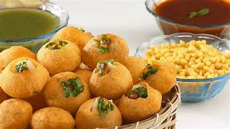
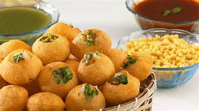
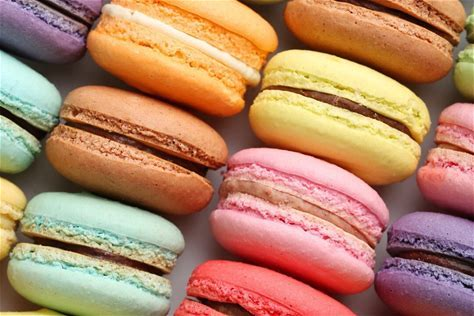
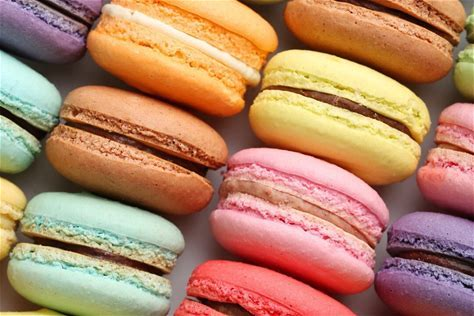
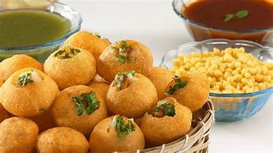
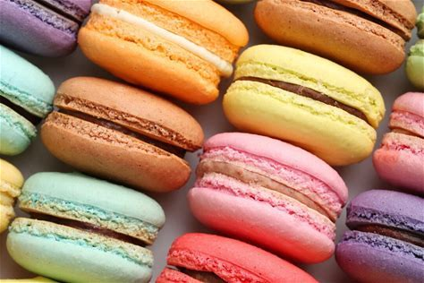
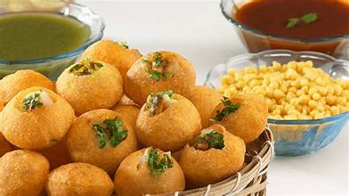
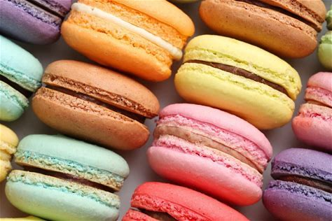

.jpeg) 


 



Welcome to the World Foods website — a flavorful journey across continents! 🌠From the vibrant streets of India to the elegance of French patisseries, food is more than just a meal — it’s a culture, a story, a tradition. Here, we showcase signature dishes from different countries, celebrating the diversity and creativity that exists in every bite. Whether it's the iconic Italian pizza, Japanese sushi, spicy biryani, or crispy macarons — every dish tells a tale. Click on a country above to begin your delicious adventure! USE THE MENU TO EXPLORE 5 FAMOUS FOODS IN WORLD AND THEIR RECEPIES ALSO USE NAVBAR TO LEARN AN OVERVIEW OF DIFFERNT COUNTRIES
Biryani is a flavorful Pakistani rice dish layered with spiced meat and basmati rice.
👉 To view full article, press on the sidebar.
Golgappe are spicy water-filled street snacks loved across India.
👉 To view full article, press on the sidebar.
Sushi is Japan’s iconic dish made with vinegared rice and fresh ingredients.
👉 To view full article, press on the sidebar.
Crown Crust Pizza is a fun Italian-inspired pizza with stuffed crust edges.
👉 To view full article, press on the sidebar.
Macarons are elegant sandwich cookies with smooth shells and rich fillings.
👉 To view full article, press on the sidebar.
American cuisine includes bold comfort food like burgers, BBQ, and more.
👉 To view full article, press on the sidebar.
Macarons are colorful and elegant French cookies with smooth shells and rich fillings.
👉 To view full article, press on the sidebar.
American cuisine blends global flavors into bold dishes like burgers, BBQ, and fried chicken.
👉 To view full article, press on the sidebar.
Contact: @5898+97